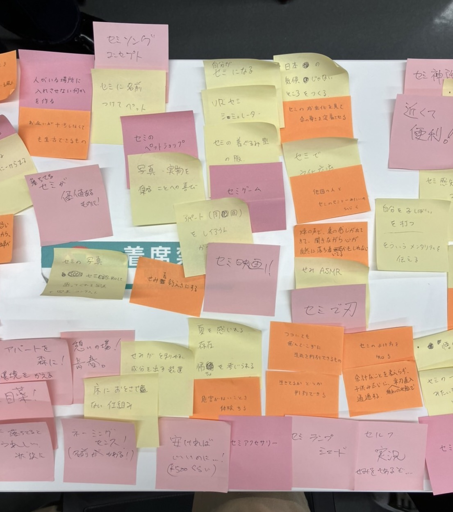
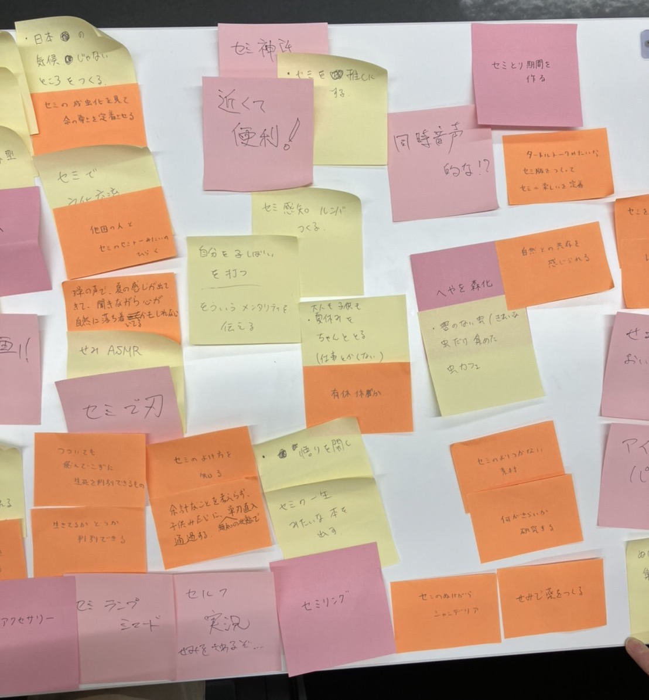
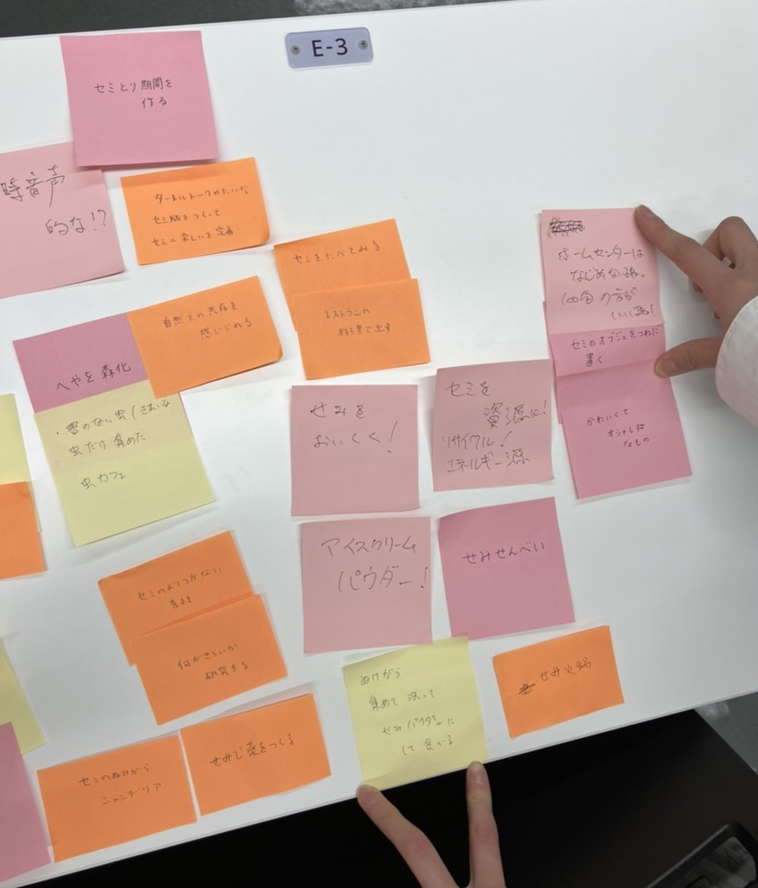
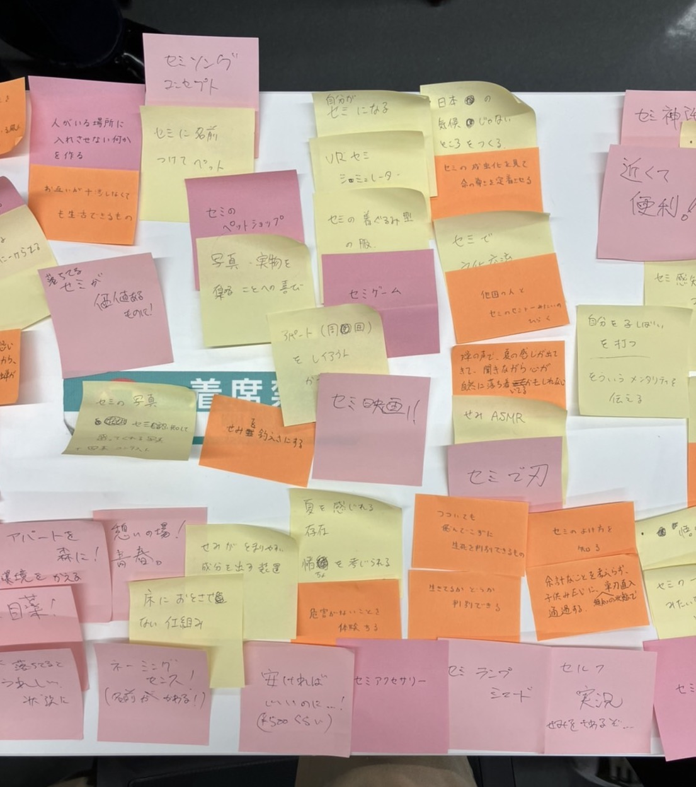
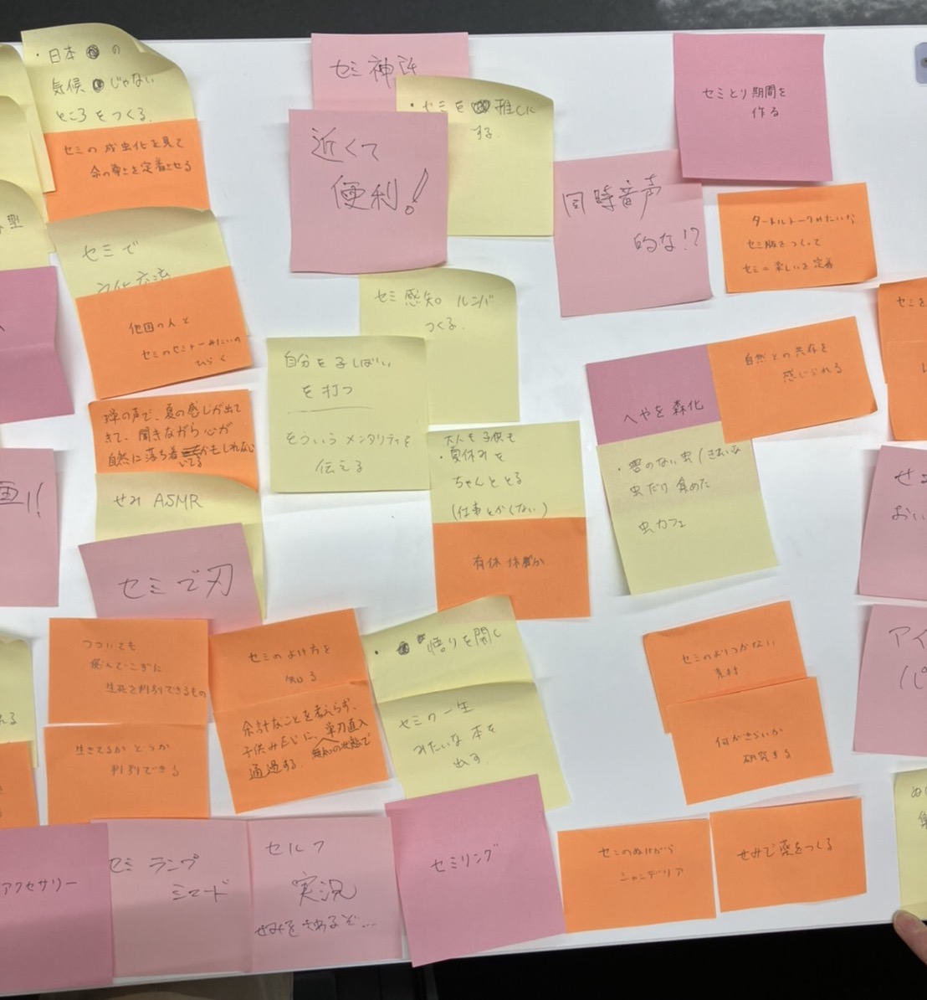
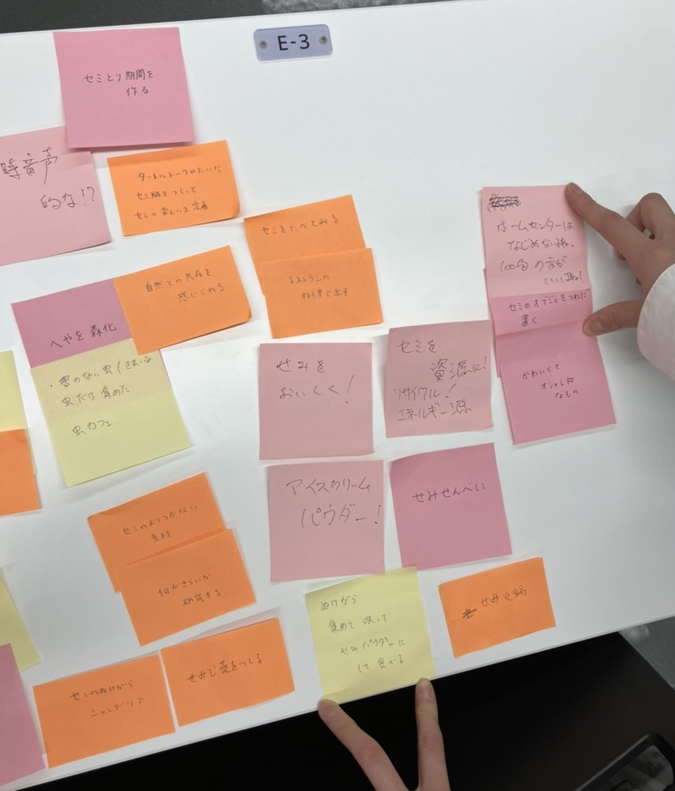

メモ
- モーターは磁力で動く
- ステッピングモーター：回転の仕方を制御できる、一回で回る角度が決まっている
- DCモーター：簡易版、ただ回るだけ
HMW・Yes＆…
- How might "we" make someone/something ...?
いいことを増やす、ポジティブな感情に特化してアイデアを出す -
答えを見据えて考えるよりは、ただ感情にフォーカスして、現実をひっくり返したり、違う視点から見てみたり、極端な考え方をしてみたりする
ニーズのニーズを考える（別のことと繋げて考えてみたりする）
→ユニークで今までになかった需要を掘り起こす
→人が言語化できていない物事を対象にした商品サービスづくり - ※POV＝問題の定義
実際のHMW・Yes＆の写真
問題：家に落ちている蝉が怖い→どうしたら良い？ 





感想
HMW・Yes＆はやってみるとどうしても視野が狭まる（答えに近づこうとしてしまう）のでかなり難しい。※ちなみにPOVの時は抽象的になりすぎた。
先生はうまく発散させるといったが、その方向性は難しいなと思った。（うまく決まればめっちゃよさそう）
前のページに戻る